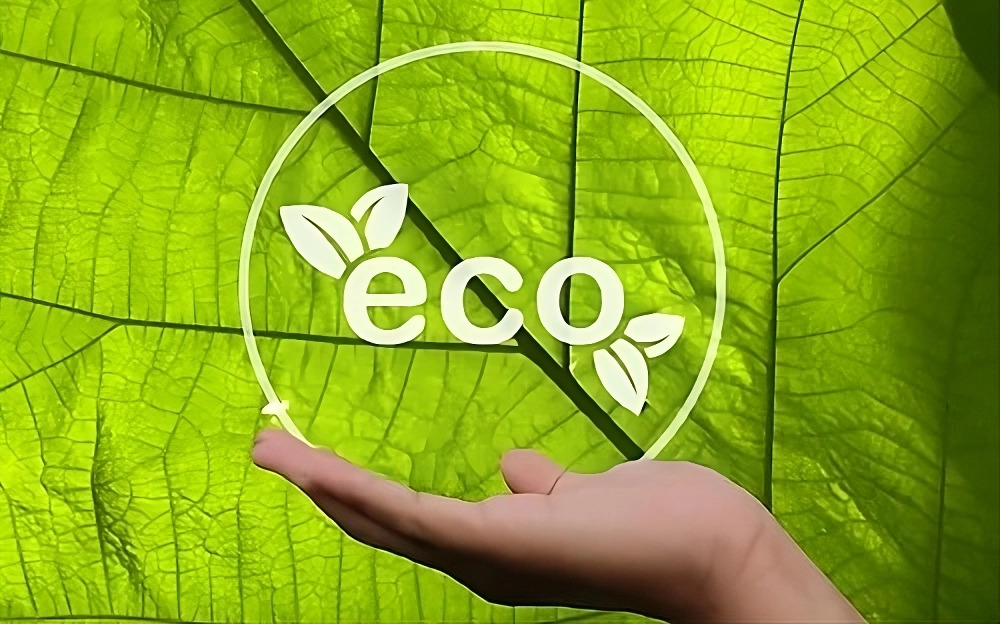

Monitor and optimize your environmental footprint with innovative tracking solutions.
Monitor your energy usage in real time, identify inefficiencies, and reduce waste with actionable insights.
Set, track, and achieve your recycling targets with customized reports and detailed analytics.
Track water usage, detect leaks, and implement water-saving strategies to maximize efficiency.
Generate comprehensive reports on carbon emissions, energy savings, and overall sustainability impact.
📊 Real-time tracking of energy, water, and waste metrics.
🌍 Customized sustainability goals with progress monitoring.
📋 Automated impact reports for regulatory and personal insights.
🔄 Tools to reduce waste and maximize resource efficiency.
⚙️ Integration with IoT devices for advanced tracking.
💡 Data-driven recommendations to improve sustainability efforts.
Comprehensive tools to help you achieve your sustainability goals.